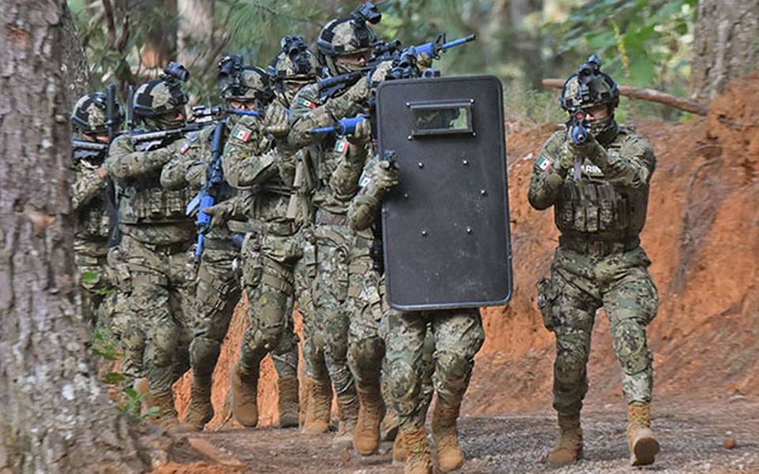

 Reconocidos a nivel internacional por el coraje y entrenamiento de estos soldados, componiendose tanto de unidades de inteligencia, como unidades de choqu.
La Infanteria de Marina de Mexico es altamente respetada en el continente Americano, por los enfrentamientos y operaciones exitosas que han obtenido contra los grupos del crimen en mexico.
Siendo sus unidades mas conocidas como los FES(Fuerza Espiritu Sabiduria)o cuachic, los UNOPES(Unidad de Operaciones Especiales) y los FESCEN(Fuerzas Especiales del Centro), siendo estas las que mayormente llevan a cabo las operaciones de alto impacto. Teniendo entrenamiento en combate urbano, enfrentamiento en vehiculos en movimiento, operaciones acuaticas, operaciones por aire y en algunas unidades paracaidismo, entre muchas mas.
Rigiendose bajo el lema:"¡LA VICTORIA O LA MUERTE CON HONOR, SIEMPRE EN CUALQUIER MISION!".